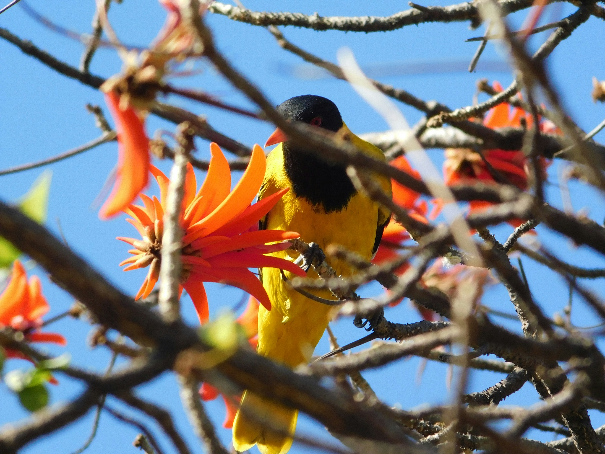

The Spotted Owlet is a small owl with a rounded head, pale facial disc, yellow eyes, and prominent white spotting across its brown plumage. It is highly adaptable and commonly lives around villages, gardens, farmland, parks, and cities. Although mainly active at night, it often emerges during daylight and may sit near the entrance of its nesting cavity.